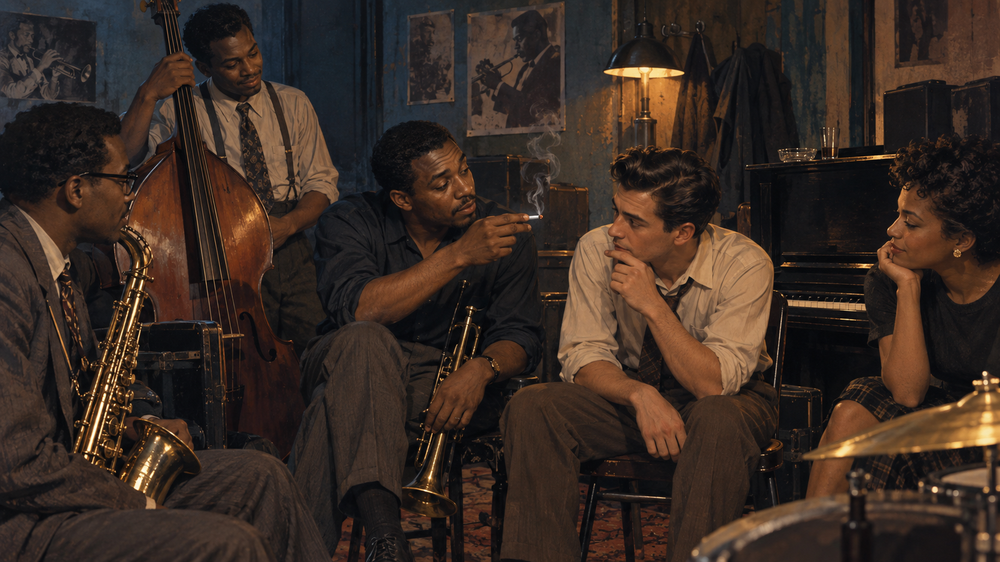

What Becker studied
Becoming a Marihuana User appeared in the American Journal of Sociology in 1953. Becker analyzed 50 interviews with people who had used cannabis. He asked a social-process question: how does a novice become able and willing to use marijuana for pleasure?
Evidence
Interview accounts reconstructed changes in technique, perception, interpretation, and continued use.
Unit of explanation
The focus was a changing relationship among person, substance, experience, and other users, rather than a fixed “drug-user personality.”
Central claim
A motive to use for pleasure can develop through experience and interaction. It need not exist before first use.
The social world around the study

Becker used the case to challenge explanations that begin with an enduring psychological need for intoxication. The same person might not enjoy cannabis at one point, later learn to enjoy it, and later stop as circumstances and meanings change. That variation becomes understandable when motivation can be learned.
Interactive: the three learned accomplishments
Select each stage. The order is analytical rather than perfectly rigid; people can repeat a stage, receive conflicting guidance, or discontinue at any point.
Why this applies Sutherland and Akers
Differential association
Intimate peers communicate technique and definitions. They may explain what a novice should notice, reassure someone that an unfamiliar sensation is expected, or define the experience as valuable.
Social learning
The novice can imitate experienced users. Desired effects and social approval may reinforce continued use; unpleasant effects, disapproval, or competing goals may reduce it.
Becker’s process also anticipates labeling theory. Law, secrecy, stigma, and relationships with nonusers affect access, favorable definitions, and consequences. His later book Outsiders placed marijuana use within a broader analysis of deviance and social control.
Using Becker in the research paper
Ask a process question
How did the person learn technique, recognize effects, and attach meaning to them?
Identify teachers
Which friends, partners, relatives, online sources, clinicians, or sellers supplied information and definitions?
Separate effect from interpretation
What bodily effect occurred, and how did the person or group name and evaluate it?
Trace change over time
Did use continue, change, or stop as relationships, tolerance, laws, access, or goals changed?
Limits
- The interviews illuminate process but do not estimate how common each pathway is.
- Contemporary products, legal markets, medical use, potency, and online information differ from the 1950s setting.
- The model best explains learning to use for pleasure; it cannot by itself explain every therapeutic, compulsive, solitary, or noncontinuing pattern.
- Students should not generalize from a historical sample to all cannabis users or all musicians.
References
- A contemporary medical-cannabis application of Becker’s framework
- Becker (1953), “Becoming a Marihuana User”
- Faupel, C. E., Weaver, G. S., & Corzine, J. (2014). The sociology of American drug use (3rd ed.). Oxford University Press.
- Hodgson, C. (2026). Howard Becker: Becoming a marihuana user. Beyond the Substance: Understanding Drugs in Culture & Society. https://soc245-what-is-a-drug.carollhodgson.chatgpt.site/topics/becker.html
- Readable copy of the original article
Previous: Sutherland and Akers · Next: Subcultural Recruitment and Socialization